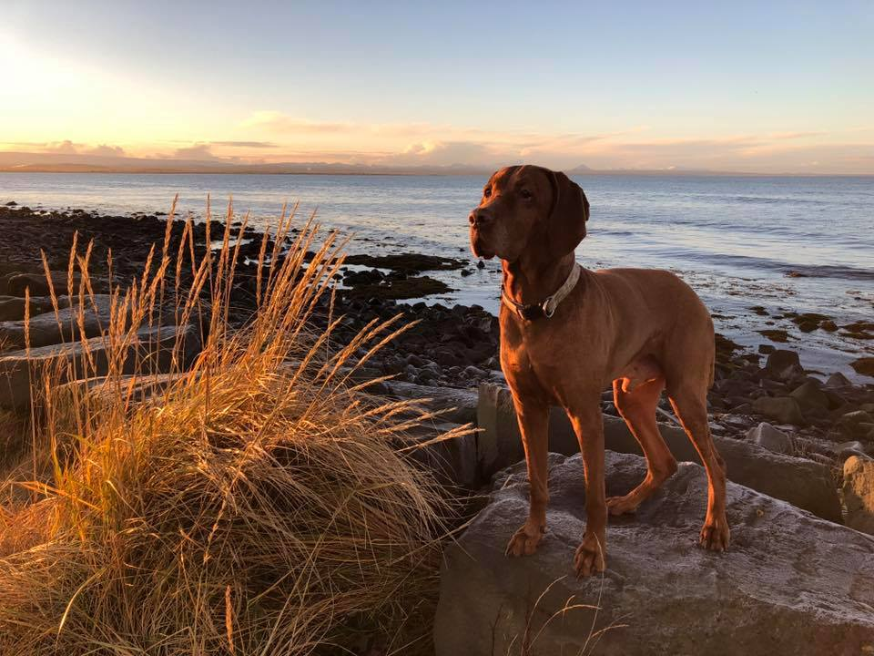

Verkefni 4.2
Í <footer> tagið á að setja upplýsignar um þig í DD lista og nokkra tengla í UL lista sem vísa á önnur verkefni og aðrar vefsíður. Vefsíðurnar eiga að birtast í nýjum glugga í vafranum (notið target:_blank)
Á vefsíðuna átt þú að bæta við innra efnisyfirliti (e. menu) með tenglum. Tenglarnir eiga að vísa á málsgreinar sem eru inná vefsíðunni. Nú er mál að skoða hvað hægt er að gera með ID eigindið. Stílaðu efnisyfirlitið með svipuðu sniði og hér er sýnt á mynd. Mundu að stíla gervi klasana a:visited, a:hover, a.active í efnisyfirlitinu.
Hvernig á að setja einn tengil á vefsíðuna sem er með fastri staðsetningu neðst á skjánum og vísar
"efst á síðu"?
90 ára gamall maður var í árlegri læknisskoðun og læknirinn spurði hann hvernig hann hefði það.
„Mér hefur aldrei liðið betur. Nýja konan mín er 18 ára og hún gengur með fyrsta barnið okkar!“
Læknirinn hugsaði um þetta eitt augnablik og sagði svo: „Einu sinni var maður sem var mjög ákafur skotveiðimaður, hann sleppti aldrei neinu veiðitímabili. Dag einn var hann á mikilli hraðferð og hann greip með sér regnhlíf í staðin fyrir riffilinn sinn. Þegar hann var kominn langt inn í skóginn þá gengur hann fram á stóran og grimman skógarbjörn. Hann miðar á hann með regnhlífinni og bang, björninn dettur niður dauður!“
„Það er óhugsandi,“ sagði gamli maðurinn, „einhver annar hlýtur að hafa skotið hann.“
„Já – það er nú eiginlega það sem ég var að reyna að segja,“ svaraði læknirinn.
Ég heiti Guðmundur.Ég er 16 ára. Ég á heima í kópavogi.En eg er fæddur og uppalin í Keflavik. Þegar ég var tólfára flutti ég til reykjavíkur
Ég á hund sem er ungversk vízla hann er 13 ára.
Her fyrir neðan er mynd af honum fyrir nokkrum árum
Mín Áhugamál eru tölvuleikir
uppáhalds tölvu leikirnir sem eg spila eru rainbow six siege og her er linkur á síðuna þeirra
Nýlega héldu Barack Obama og Vladimir Putin fund um útbreiðslu alnæmis og annarra kynsjúkdóma í löndum sínum. Putin spurði Obama hvernig stjórnvöld í Bandaríkjunum reyndu að koma í veg fyrir alnæmi.
„Við hvetjum fólk til að fara í kynlífsbindindi.“ sagði Obama.
„Það mundi aldrei ganga í Rússlandi.“ sagði Putin. „Fólk hefur samfarir allan daginn og við getum ekkert gert til að stoppa það. Ég vil láta auka notkun getnaðarvarna. En vandamálið er að það er ekki til neinn getnaðarvarnaframleiðandi í Rússlandi.“
„Ég get örugglega látið framleiða nokkur stykki handa þér.“ svaraði Obama. „Segðu mér bara hvaða stærðir þú vilt og ég skal redda þessu.“
„Allt í lagi.“ sagði Putin. „Ég þarf bara eina stærð. Þeir eiga að vera 25 sentimetra langir og ummálið á að vera 5 sentimetrar.“
„25 sentimetra langir!!!??? 5 sentimetrar í ummál!!!???“ hugsaði Obama, en sagði svo: „Ekkert mál, Vladimir minn. Þetta verður tilbúið eftir nokkra daga.“
Að fundinum loknum hringdi Obama í forstjóra getnaðarvarnafyrirtækisins: „Ég vil að þú gerir mér greiða.“ sagði hann. „Ég vil að þú sendir Vladimir Putin svona um það bil 5 milljón pakka af smokkum. Þeir eiga allir að vera 25 sentimetra langir og ummálið á að vera fimm sentimetrar. Á hverjum einasta smokki vil ég að standi Made in the USA – Size medium“
© 2019 ---
⇧